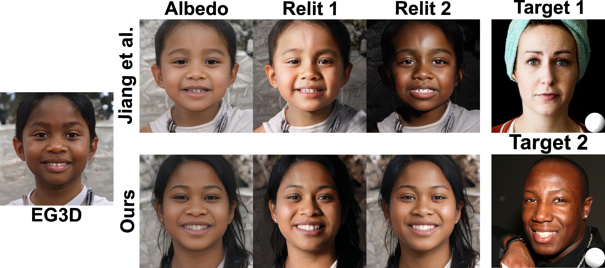

Analyzing and Improving the Skin Tone Consistency and Bias in Implicit 3D Relightable Face Generators
The IEEE/CVF Winter Conference on Applications of Computer Vision (WACV 2025)
-
Libing Zeng
Texas A&M University -
Nima Khademi Kalantari
Texas A&M University


Abstract
With the advances in generative adversarial networks (GANs) and neural rendering, 3D relightable face generation has received significant attention. Among the existing methods, a particularly successful technique uses an implicit lighting representation and generates relit images through the product of synthesized albedo and light-dependent shading images. While this approach produces high-quality results with intricate shading details, it often has difficulty producing relit images with consistent skin tones, particularly when the lighting condition is extracted from images of individuals with dark skin. Additionally, this technique is biased towards producing albedo images with lighter skin tones. Our main observation is that this problem is rooted in the biased spherical harmonics (SH) coefficients, used during training. Following this observation, we conduct an analysis and demonstrate that the bias appears not only in band 0 (DC term), but also in the other bands of the estimated SH coefficients. We then propose a simple, but effective, strategy to mitigate the problem. Specifically, we normalize the SH coefficients by their DC term to eliminate the inherent magnitude bias, while statistically align the coefficients in the other bands to alleviate the directional bias. We also propose a scaling strategy to match the distribution of illumination magnitude in the generated images with the training data. Through extensive experiments, we demonstrate the effectiveness of our solution in increasing the skin tone consistency and mitigating bias.
Supplementary Video
BibTeX
@article{Zeng_2025_relighting,
author = {Zeng, Libing and Kalantari, Nima Khademi},
title = {Analyzing and Improving the Skin Tone Consistency and Bias in Implicit 3D Relightable Face Generators},
booktitle={The IEEE/CVF Winter Conference on Applications of Computer Vision},
year={2025}
}
Acknowledgements
We express our gratitude to the anonymous reviewers for their insightful comments and suggestions. Additionally, portions of this research were conducted with the advanced computing resources provided by Texas A&M High Performance Research Computing.